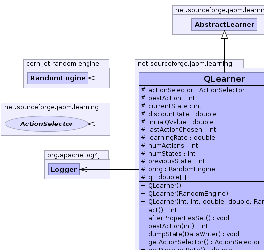
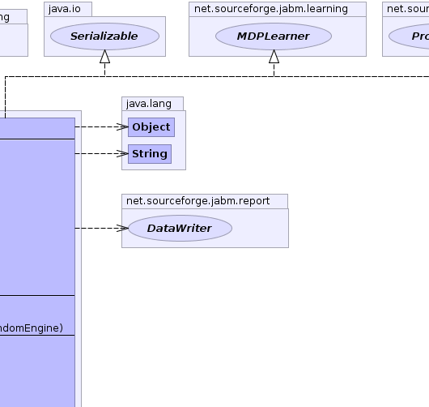
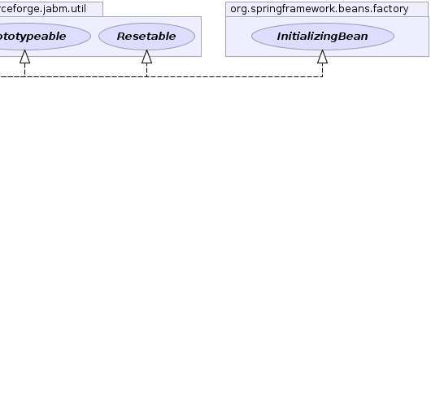
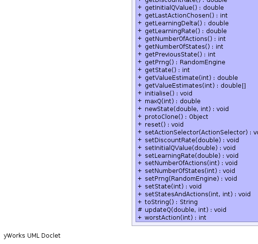
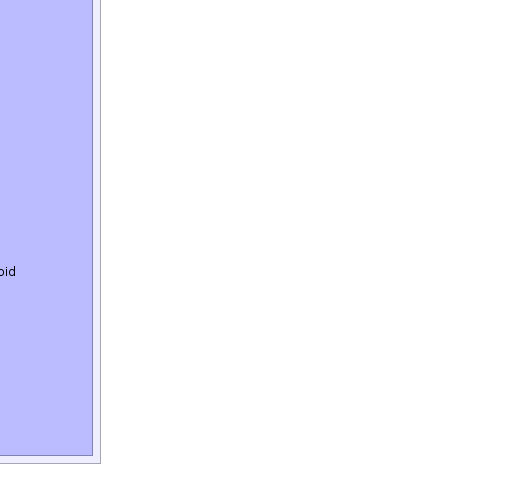

net.sourceforge.jabm.learning.AbstractLearner
net.sourceforge.jabm.learning.QLearner
net.sourceforge.jabm.learning.AbstractLearner
net.sourceforge.jabm.learning.QLearner
|
|||||||||
| PREV CLASS NEXT CLASS | FRAMES NO FRAMES | ||||||||
| SUMMARY: NESTED | FIELD | CONSTR | METHOD | DETAIL: FIELD | CONSTR | METHOD | ||||||||
java.lang.Object
public class QLearner
An implementation of the Q-learning algorithm. This algorithm is described in Watkins, J. C. H., Dayan, P., 1992. Q-learning. Machine Learning 8, 279-292.
|  |  |  |
|  |  |
| Field Summary | |
|---|---|
protected ActionSelector |
actionSelector
|
protected int |
bestAction
The best action for the current state |
protected int |
currentState
The current state |
protected double |
discountRate
The discount rate for future payoffs. |
protected double |
initialQValue
|
protected int |
lastActionChosen
The last action that was chosen. |
protected double |
learningRate
The learning rate. |
protected int |
numActions
The number of possible actions |
protected int |
numStates
The number of possible states |
protected int |
previousState
The previous state |
protected cern.jet.random.engine.RandomEngine |
prng
|
protected double[][] |
q
The matrix representing the estimated payoff of each possible action in each possible state. |
| Fields inherited from class net.sourceforge.jabm.learning.AbstractLearner |
|---|
monitor |
| Constructor Summary | |
|---|---|
QLearner()
|
|
QLearner(int numStates,
int numActions,
double learningRate,
double discountRate,
cern.jet.random.engine.RandomEngine prng)
|
|
QLearner(cern.jet.random.engine.RandomEngine prng)
|
|
| Method Summary | |
|---|---|
int |
act()
Request that the learner perform an action. |
void |
afterPropertiesSet()
|
int |
bestAction(int state)
|
void |
dumpState(DataWriter out)
Write out our state data to the specified data writer. |
ActionSelector |
getActionSelector()
|
double |
getDiscountRate()
|
double |
getInitialQValue()
|
int |
getLastActionChosen()
|
double |
getLearningDelta()
Return a value indicative of the amount of learning that occured during the last iteration. |
double |
getLearningRate()
|
int |
getNumberOfActions()
Get the number of different possible actions this learner can choose from when it performs an action. |
int |
getNumberOfStates()
|
int |
getPreviousState()
|
cern.jet.random.engine.RandomEngine |
getPrng()
|
int |
getState()
|
double |
getValueEstimate(int action)
|
double[] |
getValueEstimates(int state)
|
void |
initialise()
|
double |
maxQ(int newState)
|
void |
newState(double reward,
int newState)
The call-back after performing an action. |
java.lang.Object |
protoClone()
|
void |
reset()
Reinitialise our state to the original settings. |
void |
setActionSelector(ActionSelector actionSelector)
|
void |
setDiscountRate(double discountRate)
|
void |
setInitialQValue(double initialQValue)
|
void |
setLearningRate(double learningRate)
|
void |
setNumberOfActions(int numActions)
|
void |
setNumberOfStates(int numStates)
|
void |
setPrng(cern.jet.random.engine.RandomEngine prng)
|
void |
setState(int newState)
|
void |
setStatesAndActions(int numStates,
int numActions)
|
java.lang.String |
toString()
|
protected void |
updateQ(double reward,
int newState)
|
int |
worstAction(int state)
|
| Methods inherited from class net.sourceforge.jabm.learning.AbstractLearner |
|---|
monitor |
| Methods inherited from class java.lang.Object |
|---|
clone, equals, finalize, getClass, hashCode, notify, notifyAll, wait, wait, wait |
| Methods inherited from interface net.sourceforge.jabm.learning.Learner |
|---|
monitor |
| Field Detail |
|---|
protected int numStates
protected int numActions
protected double[][] q
protected double learningRate
protected double discountRate
protected int previousState
protected int currentState
protected int lastActionChosen
protected int bestAction
protected cern.jet.random.engine.RandomEngine prng
protected ActionSelector actionSelector
protected double initialQValue
| Constructor Detail |
|---|
public QLearner(int numStates,
int numActions,
double learningRate,
double discountRate,
cern.jet.random.engine.RandomEngine prng)
public QLearner(cern.jet.random.engine.RandomEngine prng)
public QLearner()
| Method Detail |
|---|
public java.lang.Object protoClone()
protoClone in interface Prototypeablepublic void initialise()
public void setStatesAndActions(int numStates,
int numActions)
public void setState(int newState)
public int getState()
public int act()
DiscreteLearner
act in interface DiscreteLearner
public void newState(double reward,
int newState)
MDPLearner
newState in interface MDPLearnerreward - The reward received from taking the most recently-selected
action.newState - The new state encountered after taking the most
recently-selected action.
protected void updateQ(double reward,
int newState)
public double maxQ(int newState)
public int worstAction(int state)
public int bestAction(int state)
bestAction in interface MDPLearnerpublic void reset()
Resetable
reset in interface Resetablepublic void setDiscountRate(double discountRate)
public double getDiscountRate()
public int getLastActionChosen()
public double getLearningDelta()
Learner
getLearningDelta in interface LearnergetLearningDelta in class AbstractLearnerpublic void dumpState(DataWriter out)
Learner
dumpState in interface LearnerdumpState in class AbstractLearnerpublic int getNumberOfActions()
DiscreteLearner
getNumberOfActions in interface DiscreteLearnergetNumberOfActions in interface MDPLearnerpublic double getLearningRate()
public void setLearningRate(double learningRate)
public int getNumberOfStates()
getNumberOfStates in interface MDPLearnerpublic void setNumberOfStates(int numStates)
public void setNumberOfActions(int numActions)
public int getPreviousState()
public cern.jet.random.engine.RandomEngine getPrng()
public void setPrng(cern.jet.random.engine.RandomEngine prng)
public ActionSelector getActionSelector()
public void setActionSelector(ActionSelector actionSelector)
public java.lang.String toString()
toString in class java.lang.Objectpublic double getValueEstimate(int action)
public void setInitialQValue(double initialQValue)
public double getInitialQValue()
public double[] getValueEstimates(int state)
getValueEstimates in interface MDPLearnerstate - The current state of the MDP.
public void afterPropertiesSet()
throws java.lang.Exception
afterPropertiesSet in interface org.springframework.beans.factory.InitializingBeanjava.lang.Exception
|
|||||||||
| PREV CLASS NEXT CLASS | FRAMES NO FRAMES | ||||||||
| SUMMARY: NESTED | FIELD | CONSTR | METHOD | DETAIL: FIELD | CONSTR | METHOD | ||||||||